بسم الله الرحمن الرحيم
Sayyid Abul Ala Maududi - Tafhim al-Qur'an - The Meaning of the Qur'an
 40.
Surah Al Mu'min (The Believer), also known as Surah Al Ghafir (The
Forgiver)
40.
Surah Al Mu'min (The Believer), also known as Surah Al Ghafir (The
Forgiver)
The Surah takes its name Al Mu'min from verse 28, implying thereby, that it is a Surah in which Al Mu'min (the Believer of Pharaoh's people) has been mentioned.
According to Ibn 'Abbas and Jabir bin Zaid, this Surah was sent down consecutively after Surah Az-Zumar, and its present position in the order of the Surahs in the Quran is the same as its chronological order.
There are clear indications in the subject matter of this Surah to the conditions in which it was revealed. The disbelievers of Makkah at that time were engaged in two kinds of the activities against the Holy Prophet. First, they were creating every kind of suspicion and misgiving in the minds of the people about the teaching of the Quran and the message of Islam and about the Holy Prophet himself by starting many disputes and discussions, raising irrelevant objections and bringing ever new accusations so that the Holy Prophet and the believers were sick of trying to answer them. Second, they were preparing the ground for putting an end to the Holy Prophet himself. They were devising one plot after the other, and on one occasion had even taken the practical steps to execute a plot. Bukhari has related a tradition on the authority of Hadrat Abdullah bin Amr bin 'As saying that one day when the Holy Prophet was offering his Prayer in the precinct's of the Kabbah, suddenly 'Uqbah bin Abi Mu'ait, rushed forward and putting a piece of cloth round his neck started twisting it so as to strangle him to death. Hadrat Abu Bakr, who happened to go there in time, pushed him away. Hadrat Abdullah says that when Abu Bakr was struggling with the cruel man, he was saying words to the effect: "Would you kill a man only because he says: Allah is my Lord?" With a little variation this event has also been mentioned in Ibn Hisham, Nasa'i and Ibn Abi Hatim .
Both aspects of this have been clear]y stated at the very outset, and then the whole following discourse is a most effective and instructive review of them.
As an answer to the conspiracies of murder, the story of the Believer of the people of Pharaoh has been narrated (vv. 23 - 55) and through this story three different lessons have been taught to the three groups:
The disbelievers have been admonished: "Whatever you intend to do against Muhammad (upon whom be Allah's peace), the same did the Pharaoh with his might intend against the Prophet Moses. Now, would you like to meet with the same fate with which he met by plotting such conspiracies ?"
The Prophet Muhammad (upon whom be Allah's peace) and his followers have been taught the lesson: "These wicked people may apparently be very strong and powerful and you very weak and helpless against them, yet you should rest assured that the might of that God Whose Word you are trying to raise high is superior to every other power. Therefore, you should only seek Allah's refuge in response to every and any dreadful threat that they utter against you, and then busy yourself after this in fearlessly performing your mission. The God-worshiper has only one answer to every threat of the tyrant: `I have taken refuge in my Lord and your Lord against every arrogant person who does not believe in the Day of Reckoning.' (v. 27) Thus, if you go on performing your mission fearless of every danger and with full trust in God, His succor will ultimately reach you, and the Pharaohs of today shall be doomed just as the Pharaohs of yesterday. Till that time you will have to face and bear patiently every wave of persecution and tyranny that may be directed against you."
Besides these two, there was a third group of the people also in the society, who had been convinced in their hearts that the Truth was only on the side of the Holy Prophet Muhammad (upon whom be Allah's peace), and that the disbelieving Quraish were being unjust and cruel. But in spite of the conviction they were watching quietly and unconcerned the conflict between the Truth and falsehood. Allah here has aroused their conscience as if to say: "When the enemies of the Truth have openly plotted, in front of your very eyes, it would be a sad reflection on you if you still remained indifferent. Under such conditions, unless a person's conscience has wholly become dead, he should rise and perform the duty, which a righteous man from among the courtiers of Pharaoh himself had performed at a time when the Pharaoh had made up his mind to kill the Prophet Moses. The circumstances that prevent you from raising your voice had also obstructed the way of the Believer, but he had full faith in Allah and disregarded all expediency; then note that the Pharaoh was not able to do him any harm."
Now as for the conspiracies, which were continuing in Makkah day and night to defeat the Truth, on the one hand, arguments have been given to prove the doctrines of Tauhid and the Hereafter as true, which were the real basis of the dispute between the Holy Prophet and the disbelievers, and it has been stated plainly and openly that the disbelievers are wrangling over those truths without any knowledge. On the other, the motives which were the real cause of the Quraishite chiefs' conflict against the Holy Prophet, have been exposed. Apparently they were trying to have the common people believe that they had some genuine objections against the teaching of the Prophet and his claim to prophethood; that is why they were not prepared to listen to him. But, in fact, this was their struggle for power. In verse 56, they have been openly warned, so as to say" "The real cause of your denial is your arrogance and vanity. You think that if you acknowledge the prophethood of Muhammad (upon whom be Allah's peace), your power and authority will come to an end. That is why you are straining every nerve to frustrate and defeat him."
In the same connection, the disbelievers have been warned again and again to the effect:"If you do not desist from wrangling against the Revelations of Allah, you will be doomed to the same fate as the nations of the past. Much worse torment awaits you in the Hereafter. Then you will repent, but it will be too late.

In the name of Allah, the Compassionate, the Merciful.
[1-3] Ha-Mim. The revelation of this Book is from Allah, the All-Mighty, the All-Knowing, the Forgiver of sin and Acceptor of repentance. He is stern in punishment and is highly Bountiful. There is no deity beside Him. To Him shall all return.1
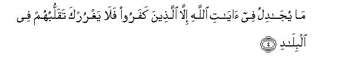
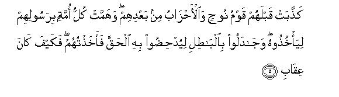
[4-6] None dispute about the Revelations of Allah2 but those who have disbelieved.3 So let not their strutting about in the lands deceive you.4 Before them the people of Noah also denied, and so did many a host after them. Every nation fell upon its Messenger to seize him: they all tried to defeat the Truth by means of falsehood, but, at last, I seized them. Then, just see, how severe was My punishment! Likewise has this judgment of your Lord also proved true against those people who have denied that they would go to Hell.5
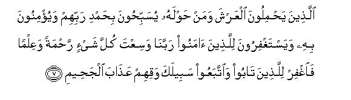
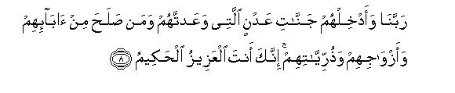
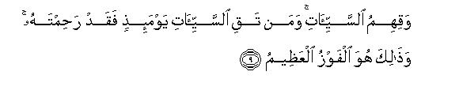
[7-9] The angels who bear the Divine Throne and those who stand around it, all are glorifying their Lord with His praises. They affirm faith in Him, and ask forgiveness for the believers.6 They say, "Our Lord, You embrace everything in Your mercy and knowledge,7 so forgive and save from the torment of Hell8 those who have repented and followed Your Way.9 Admit them, Our Lord, to the eternal Gardens which You have promised them,10 and (admit therein also) of their parents and wives and children who are righteous.11 You are surely All-Mighty, All-Wise. And deliver them from evils,12 for whomever You delivered from evils on the Day of Resurrection,13 to him You showed great mercy. This is indeed the supreme success."
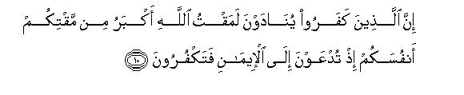
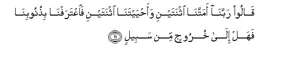
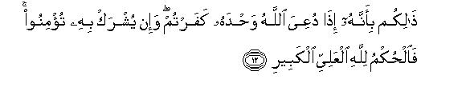
[10-12] To those who have disbelieved, it will be proclaimed, on the Day of Resurrection: "Allah's wrath against you was greater than is your own anger against yourselves today, when you were called to belief and you disbelieved."14 They will answer, "Our Lord, You indeed gave us death twice and life twice.15 Now we confess our sins.16 Is there any way out from here?17 (They will be answered:) "You have incurred this fate because when you were called towards Allah, the One, you refused to believe, and when others were associated with Allah, you readily believed. Now the Judgment rests with Allah, the High, the Great!"18

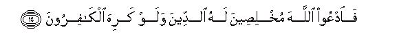
[13-14] It is He Who shows you His Signs19 and sends down for you sustenance from heaven,20 but only such a one learns lesson (from the observation of these Signs) who turns to Allah again and again.21 (Therefore, O you who turn to Him: "Invoke Allah alone, making your religion sincerely His,22 although the disbelievers may dislike your conduct."
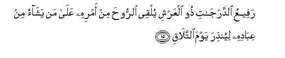
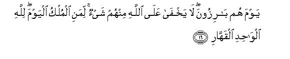
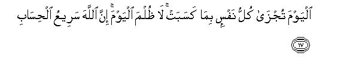
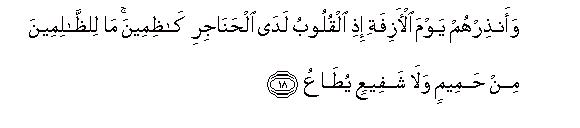
[15-20] Exalted in ranks23 and Master of the Throne,24 He sends down the Spirit by His Command upon whomsoever of His servants He pleases,25 to give warning of the Day of Meeting,26 the Day when all people shall be naked, and nothing of them will be hidden from Allah. (On that Day it will be asked:) "Whose is the Kingdom today?"27 (The whole universe will cry out:) Of Allah, the One, the Omnipotent (It will be said): "Today every living being shall be recompensed for what it has earned: none shall be wronged today28 And Allah is swift at reckoning."29 O Prophet, warn them of the Day that has approached near,30 when the hearts will leap up to the throats and the people will he standing mute, grief stricken: the wrongdoers will neither have any kindly friend31 nor any intercessor who may be listened to.32 Allah is aware of the treachery of the eyes and even of the secrets that the breasts keep hidden, and Allah shall judge with full justice. As for those whom they (the mushriks) invoke instead of Allah, they shall judge nothing. Indeed, Allah alone hears everything and sees everything.33
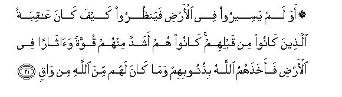
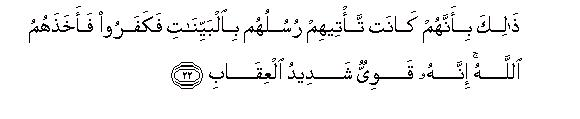
[21-22] Have they never traveled in the land that they could see the end of those who have gone before them? They were stronger than they in power and have left mightier traces in the land, but Allah seized them because of their sins and there was none to save them from Allah. They met this doom because their Messengers came to them with clear Signs34 and they refused to believe in them. Consequently, Allah seized them. Indeed, He is Mighty and very stern in punishment.
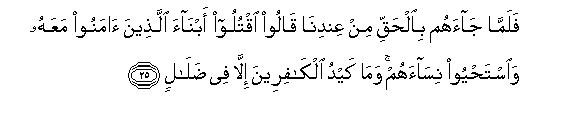
[23-25] We sent Moses35 to Pharaoh and Haman36 and Korah with Our Signs and a clear authority of appointment,37 but they said, "He is a sorcerer, a liar." Then, when he brought them the truth38 from Ourself, they said, "Kill the sons of those who have believed and joined him and spare their daughters."39 But the disbelievers plot ended in vain.40
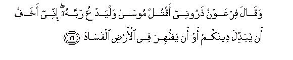
[26] One day41 Pharaoh said to his courtiers, "Let me alone that I may kill this Moses42 and let him call to his Lord. I fear. he will change your religion, or cause mischief to appear in the land."43
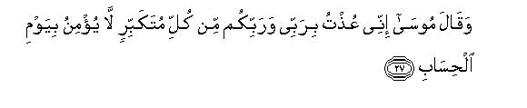
[27] Moses said, "I have taken refuge in my Lord and your Lord against every arrogant person who does not believe in the Day of Reckoning."44
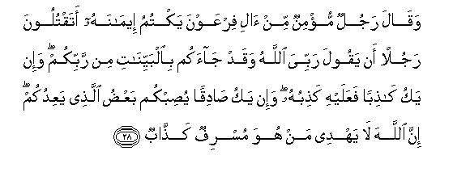
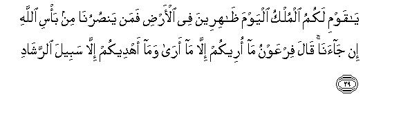
[28-29] At this, a believing man from among the kinsfolk of Pharaoh, who had kept his faith hidden, spoke out, "Would you kill a man merely because he says: My Lord is Allah? Whereas he has brought clear Signs to you from your Lord.45 If he is a liar, his lie will recoil on him,46 but if he is truthful, some of the dreadful things with which he threatens you, will certainly befall you. Allah does not guide the one who is a transgressor and a liar.47 O my people, today you possess the kingdom and are dominant in the land, but who will help us if we are visited by Allah's scourge?48
Pharaoh said, "I am telling you the same which I think is proper, and I am only guiding you to the way which is right."49
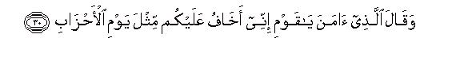
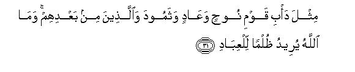
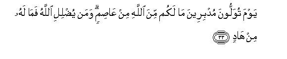
[30-33] The man who had believed, said, "O my people! I fear that you also may be overtaken by the day that has already overtaken many hosts, a day that overtook the people of Noah and `Ad and Thamud and the peoples after them. And the fact is that Allah does not seek to wrong His servants.50 O my people! I fear for you the day of wailing, when you will cry out to one another and run about, but there will be bone to protect you from Allah; the truth is that there is none to guide the one whom Allah lets go astray.
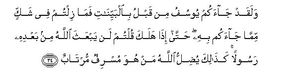
[34-35] Before this Joseph had brought to you clear Signs, but you continued to be in doubt concerning his teachings. Then, when he died, you said, "Allah will never send another Messenger after him."51 Likewise,52 Allah lets go astray the transgressors and doubters who dispute concerning the Revelations of Allah even without any authority having come to them.53 Such an attitude is abhorred by Allah and the believers. Thus does Allah set a seal on the heart of every arrogant, self-exalting person.54
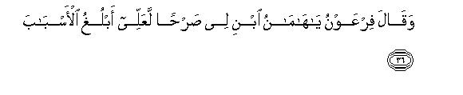
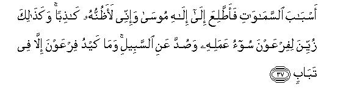
[36-37] Pharaoh said, "O Haman, build for me a tower that I may reach the paths, the paths of the heavens, and peep at the God of Moses, for I drink that Moses is a liar."55 Thus the misdeeds of Pharaoh were trade seem fair to him and he was barred from the Right Way: all his scheming only led to (his own) ruin.
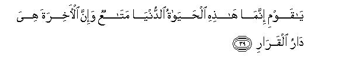
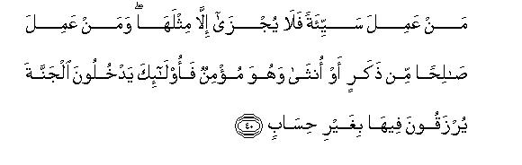
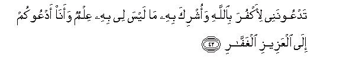
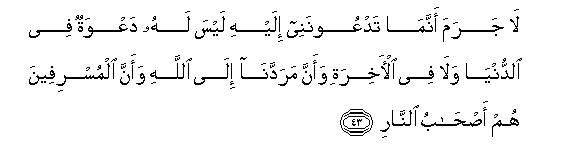
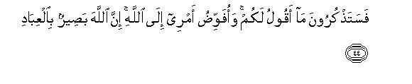
[38-44] The man who had believed, said, "O my people! Follow me: I shall show you the right way. O my people! the life of this world is temporary.56 Only the abode of the Hereafter is everlasting. Whoever does evil shall be recompensed to the extent of the evil done; and whoever does good, whether man or woman,provided that he is a believer, all such people shall enter Paradise wherein they shall be provided without measure. O my people! How it is that I call you to salvation and you call me to the Fire! You call me to deny Allah and associate with Him those whom I do not know,57 while I am calling you to the All-Mighty, the All-Forgiving God. Nay, the truth is, and it cannot be otherwise, that those to whom you call me, can neither he called to in this world nor in the Hereafter,58 and to Allah have we all to return, and the transgressors59 shall go to Hell. Soon you will remember what I am telling you today. To Allah I entrust my affairs. He is ever Watchful over His servants."60
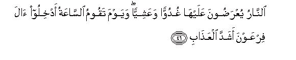
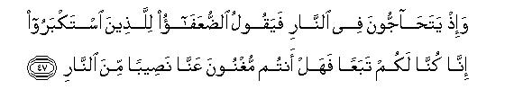
[45-47] At last, Allah saved the Believer from all those evil plots that the people devised against him,61 and the companions of Pharaoh themselves were encompassed by the horrible scourge.62 It is the fire of Hell before which they are presented morning and evening. And when the Hour of Resurrection comes, it will be commanded: "Admit the people of Pharaoh to the severest torment."63 Then imagine the time when these people will be disputing with one another in Hell. The weak ones will say to the haughty one, "We were your followers: now, can you save us from some part of our punishment in Hell?"64
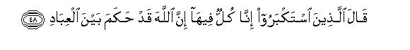
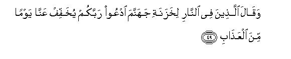
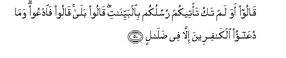
[48-50] The haughty ones will say, "We are all in the same state here, and Allah already has passed judgment between His servants."65 Then these dwellers of Hell will say to its keepers, "Pray to your Lord to relieve us of the, torment for only one day." They will ask, "Did not your Messengers come to you with clear Signs?" They will say, "Yes." The keepers of Hell will say, "Then pray (for help) yourselves. But the prayer of the disbelievers only ends in vain."66
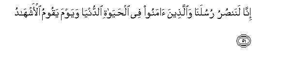
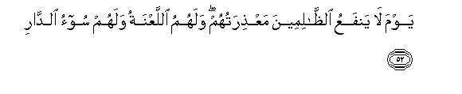
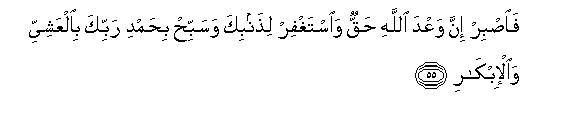
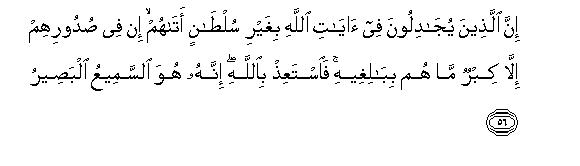
[51-56] Believe it that We do help Our Messengers and the Believers in the life of this world,67 and so shall We help them on that Day also when the witnesses shall stand up,68 and the excuses of the wrongdoers shall not avail them anything. They shall have the curse on them and the worst abode. Just consider this: We showed Moses guidance69 and trade the children of Israel to inherit the Book, which was guidance and admonition for the men of understanding.70 So, be patient,71 O Prophet: Allah's promise is true.72 Ask forgiveness of your errors,73 and glorify your Lord morning and evening with His praise.74 The fact is that the hearts of those who are disputing concerning the Revelations of Allah without any authority having come to them, are filled with pride,75 but they shall never attain to their ambitions.76 So, seek Allah's refuge.77 He hears everything and sees everything.
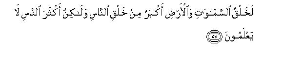
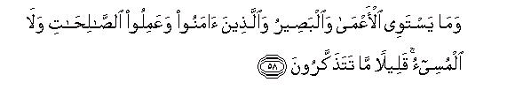

[57-59] Surely78 the creation of the heavens and the earth is a greater thing than the creation of man, but most people do not know.79 And the blind and the seeing cannot be equal, nor are the believing and righteous men equal to the wicked, but you people understand only a little.80 The Hour of Resurrection is sure to come; there is no doubt about it, but most people do not believe.81
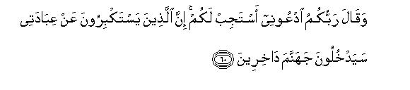
[60] Your82 Lord says: "Call upon Me. I will answer your prayers.83 Those who disdain My worship on account of pride, shall certainly enter Hell, disgraced."84
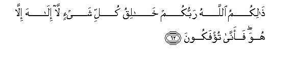
[61-63] It is Allah Who made the night for you to rest in it, and made the day bright. The fact is that Allah is highly Bounteous to the people, yet most people are not thankful.85 The same Allah (Who has done all this for you) is your Lord, the Creator of everything. There is no god but He.86 Whence then are you being deluded?87 Likewise were all those people deluded, who denied the Revelations of Allah.88
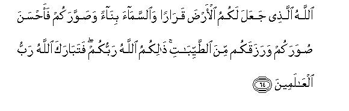
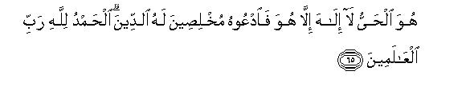
[64-65] It is Allah Who made the earth a resting-place for you89 and the sky a canopy over it,90 Who shaped you, and shaped you so well, and Who provided you with pure things.91 The same Allah (Who did all this) is your Lord. Highly blessed is Allah, Lord of the Universe. He is the Living One.92 There is no god but He. Call upon Him alone, making your religion sincerely His.93 All praise is only due to Allah, Lord of the Universe.94
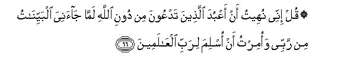
[66] O Prophet, tell the people, "I have been forbidden to worship those whom you invoke instead of Allah.95 (How can I do this) when clear Signs have come to me from my Lord? I have been commanded to submit to the Lord of all creation. "
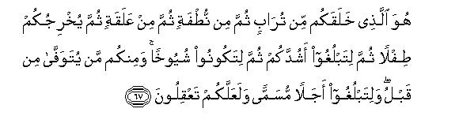
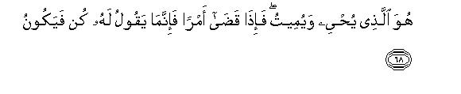
[67-68] He it is Who created you from dust, then from a sperm, then from a clot of blood, then He delivers you as an infant, then He makes you to grow up to attain to full strength,then makes you to grow further to reach old age, though some one of you are recalled earlier.96 This is done so that you may reach an appointed time97 and may understand the reality.98 He it is Who gives life and ordains death. Whatever He decrees, He only commands it to be and it is.
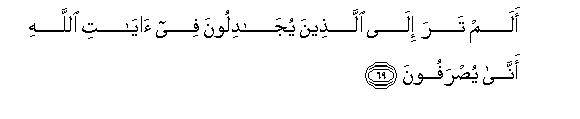
[69-77] Have you seen how those who dispute concerning Allah's Revelations are being turned about?99 Those who deny this Book and those Books which We sent with Our Messengers,100 shall soon know when, with fetters round their necks and chains, they shall be dragged towards boiling water and then cast into the fire of Hell.101 Then they will be asked, "Where are those other gods than Allah, whom you associated?"102 They will answer, "They have been lost to us; nay, we did not call upon anything before this."103 Thus will Allah establish the deviation of the disbelievers. It will be said to them, "You have met this fate because you rejoiced on the earth in things other than the Truth, and then exulted in it.104 Enter now the gates of Hell to live therein for ever. What an evil abode for the arrogant! So, be patient,105 O Prophet, Allah's promise is true. Whether We let you witness a part of the evil consequences with which We are threatening them, or recall you from the world (before this), they have to return to Us.106
[78] O Prophet, We have sent many a Messenger before you. Of them there are some whose stories We have related to you, and of others We have not related.107 Yet it was not in the power of any Messenger to have himself brought a Sign,108 without Allah's leave. Then, when Allah's Command came, the judgment was passed with justice, and the wrongdoers then incurred loss.109
[79-81] It is Allah Who has provided the cattle that you may ride on some and eat the flesh of others. Then you have many other uses also in them. You ride on them to places that you desire in your hearts to reach, and you are carried on them as well as on ships. Allah shows you these Signs of His. Then, which Signs of His will you still deny?110
[82-85] Well,111 have they not traveled in the earth that they could see the fate of those who have gone before them? They were more in number and stronger-in might and have left behind greater traces of their power in the land; yet what they earned did not avail them anything. When their Messengers came to them with clear Signs, they remained stuck to the knowledge that they already had,112 and then were encompassed by the same thing that they mocked. When they saw Our scourge, they cried out, "We now believe in Allah, the One, and we reject all those gods whom we used to associate with Him." But after having seen Our scourge, their belief could be of no avail to them, because the same has been the standing law of Allah to deal with His servants, in the past,113 and then the disbelievers only incurred loss.
1This is the introduction to the discourse. By this the listener has been forewarned to the effect: ¦What is being presented before you, is not the word of an ordinary being but of that God Who has infinite power." After this, some of Allah's attributes have been mentioned, one after the other, which bear a deep relevance to the following theme:
First, that He is "All-Mighty", i.e. He is Dominant over everything. His every decree concerning anybody is always enforced; none can fight Him and win; none can escape His grasp. Therefore, a person who expects to be successful after turning away from His Command and expects to frustrate His Message after having a dispute with Him is himself foolish. Such notions are only deceptions.
Second, that He is "All-Knowing", i.e. He does not say anything on mere conjecture, but has the direct knowledge of everything. Therefore, whatever information He gives about the supernatural realities, is lure, and the one who does not accept it, is following nothing but ignorance. Likewise, He knows in what lies the true success of man and what rules and laws and commands are necessary for his well-being. His every teaching is based on wisdom and correct knowledge, which does not admit of any error. Therefore, if a person does not accept His guidance, he only wants to follow the path of his own ruin. Then, nothing from the acts and deeds of man can remain hidden from Him; so much so that He even knows the intentions of man, which arc the real motives of his deeds. Therefore, man can never escape His punishment.
The third attribute is that He is "Forgiver of sin and Acceptor of repentance. " This attribute brings hope and causes inducement, which has been mentioned so that the people who have led lives of sin, should not despair but should reform themselves with the hope that if they refrained from their behavior even now, they could still be redeemed by Allah's mercy. Here, one should understand well that forgiving of sins and accepting of repentance are not necessarily one and the same thing, but in most cases Allah forgives sins even without the repentance. For example, a person commits errors as well as does good, and his good acts become the means of forgiveness for his mistakes, whether or not he had opportunity to show repentance for the errors, but might even have forgotten them. Likewise, all the troubles and hardships and diseases and calamities that afflict man and cause him grief in the world, serve as penance for his mistakes. That is why mention of forgiveness of sins has been made separately from the acceptance of repentance. But one should remember that the concession of forgiveness of errors without repentance only refers to those believers, who are free from defiance and who committed sins due to human weakness and not persistence in pride and sin.
The fourth attribute is that "He is stern in punishment." By this the people have been warned that just as Allah is Merciful for those who adopt the way of His service, so He is stern for those who adopt an attitude of rebellion against Him. When a person (or persons) transgresses the limits where he can still deserve pardon and forgiveness from Allah, then he becomes worthy of His punishment, and His punishment is so dreadful that only a fool would persist in his wrongdoing.
The fifth attribute is that "He is Bountiful", i.e. He is Generous and Beneficent: all creatures are being showered with His blessings and favors every moment: whatever the servants are getting, they are getting only through His bounty and beneficence.
After these five attributes, two realities have been stated expressly:
(1) That none but Allah is the Deity no matter how many false gods the people might have set up; and
(2) that to Him everyone must return: there is no other deity which can call the people to account and reward or punish them.
Therefore, if somebody makes another his deity, apart from Him, he will himself face the consequences of his folly.
2"To dispute" means using crooked arguments in reasoning, raising irrelevant objections, isolating a word or a sentence from its context, subjecting it to hair-splitting and making it the basis of doubts and accusations, misconstruing words from their true sense and intention so that neither should one understand the meaning oneself nor let others understand it. Such a way of dispute is adopted only by those whose difference of opinion is based on ill-will and malice. If a well-intentioned opponent disputes a point, he does so for the sake of arriving at the truth, and wants to be satisfied through discussion whether his own point of view is correct. Such a discussion is engaged in quest of truth and not for refutation. Contrary to this, the real purpose of the malicious opponent is not to understand anything nor to help others to understand, but to degrade and humiliate the other man; he joins a discussion only with the intention that he would not let the other man carry his point. That is why he never faces the real problems but launches his attacks only on the irrelevant issues.
3Here, the word kufr" has been used in two meanings: for ingratitude and for denial of the truth. According to the first meaning, the sentence would mean: As against the Revelations of Allah this sort of behavior is adopted only by those who have forgotten His bounties and who have even lost the feeling that it is by His bounty that they are flourishing. According to the second, it would mean: "This sort of behavior is adopted only by those who have turned away from the truth and are determined not to accept it. " From the context it becomes obvious that here the disbeliever does not imply every non-Muslim, for a non-Muslim who disputes a point in good faith for the sake of understanding Islam, and who tries to grasp thoroughly those things which he fends hard to follow, although a non Muslim technically, yet that which has been condemned in this verse does not apply to him.
4There is a gap between the previous sentence and this, which has been left for the listener to fill. From the context and style it becomes evident that those who adopt the attitude of disputation as against the Revelations of Allah Almighty, can never escape the punishment. Therefore, they shall inevitably meet their doom. Now, if one sees that those people, even after adopting such an attitude, arc strutting about, their business is flourishing, their governments functioning in a grand style. and they are enjoying the good things of life, one should not be misled into thinking that they have escaped Allah's punishment, or that war against Allah's Revelations is a sport which can be adopted as a pastime and its evil consequences warded off easily. This, in fact, is a respite which they have been granted by Allah. Those who abuse this respite for doing more mischief arc indeed preparing for an ignominious end.
5That is, `The torment that seized them in the world was not their final punishment, but Allah has also decreed that they shall go to Hell.' Another meaning can be: "Just as the nations of the past have gone to their doom, so will those people also who arc committing disbelief go to Hell, according to the fixed decree of Allah."
6This thing has been said for the consolation of the Holy Prophet's Companions, who were feeling greatly discouraged at the impudence and rebellious attitude of the disbelievers of Makkah as against their own helplessness, as if to say: Why do you feel grieved at what these mean and worthless people say? You have the support of the angels who bear the Divine Throne and of those who stand around it; they are interceding with Allah for you." The mention of the angels who bear the Divine Throne and of those who stand around it, has been made, instead of the common angels, to impress the fact that not to speak of the common angels of Divine Kingdom, even the angels who are the pillars of this Kingdom, being nearest in rank and station to Allah, bear deep sympathy and regard for you. Then the words: ¦They affirm faith in Him and ask forgiveness for the believers", show that the relationship of the faith is the real relationship, which has joined the heavenly creatures and the earthly creatures together, and which has induced sympathy and esteem in the angels stationed around the Throne for the mortal humans inhabiting the earth, who affirm faith in Allah just like them. The angels' affirming the faith in Allah does not mean that they could disbelieve, and they adopted belief instead of disbelief, but it means that they believe in the sovereignty of Allah, the One, alone there is no other being that may be commanding them and they submit before it in utter obedience. When the same attitude and behavior was adopted by the human believers, a strong relationship of cherishing a common creed and faith was established between them and the angels in spite of the great disparity in species and remoteness in rank and station.
7That is, `The weakness, lapses and errors of Your servants are not hidden from You: You indeed know everything, but like Your knowledge Your Mercy also is infinite; therefore, forgive the poor creatures in spite of knowing their errors." Another meaning can be: "Forgive by Your Mercy all those about whom by Knowledge You know that they have repented sincerely and have, in reality, adopted Your Way."
8To forgive and to save from the torment of Hell are although not related, and there seems to be no need to mention the other when one has been mentioned, this style, in fact, reflects the deep interest the angels have in the believers. It is customary that when a person who is deeply involved in a matter. finds an opportunity to make submissions before a judge, he presents the same petition humbly over and over again, in different ways, and does not rest content with making the petition just once.
9"Who ... way": 'Who have given up disobedience and rebellion, adopted obedience and followed the way which You Yourself have shown."
10Here again there is the same state of solicitude as referred to in E.N. H above. Obviously. forgiving and saving from Hell by itself amounts to admitting to Paradise. And then soliciting Allah for granting the believers the same Paradise which He Himself has promised theta, seems to be unnecessary, but the angels are so earnest in their desire of well-being for the believers that they go on repeating their good wishes for them although they know that Allah will certainly bless them with these favors in the Hereafter.
11That is. "Join with them their parents and their wives and children for the comfort of their eyes." This same thing Allah Himself has stated as among the blessings which the believers will be granted in Paradise. For this see Ar-Ra'd: 23 and At-Tur: 21. In the verse of Surah Tur, there is also the explanation that if a person. will deserve a higher rank in Paradise, which his parents will not deserve, he will not be lowered in rank to be joined with them but Allah will raise them to join him in the higher station.
12The word sayyi'at (evils) is used in three different meanings and all three arc implied here: (I) False beliefs, perverted morals and evil deeds; (2) consequences of deviation and evil deeds; and (3) calamities, disasters and suffering in this world, or in barzakh, or on the Day of Resurrection. The object of the angels' prayer is that they be saved from everything which may be evil for them.
13"Evils on the Day of Resurrection" implies the dread and terror of the Day. deprivation of the shade and every other comfort, severity of accountability, the ignominy of exposing every secret of life before all mankind, and other humiliations and hardships which the guilty ones will experience in the Hereafter.
14That is, "When the disbelievers will see on the Day of Resurrection that they had committed a grave folly by founding their entire life-work on polytheism and atheism, denial of the Hereafter and opposition to the Messenger, and due to the folly they were now doomed to that evil end, they will bite at their fingers and will curse themselves fretfully. At that time the angels will proclaim to them: "Today you are being angry with yourselves, but in the world when the Prophets of Allah and the other good people invited you to the right path to save you from this evil end, you turned down their invitation, Allah's wrath against you then was even greater. "
15This same thing has already been mentioned in Al-Baqarah: 28 above. It implies this: "How can you disbelieve in Allah? He granted you life when you were lifeless; then He will give you death. and then will again raise you back to life." The disbelievers do not deny the first three of these conditions, because they are perceptible and therefore un-deniable. But they refuse to accept the occurrence of the fourth condition, for they have not yet experienced it, and only the Prophets have foretold it. On the Day of Resurrection when the fourth condition also will be practically experienced by them, then they will acknowledge that the same which the Prophets had foretold had actually happened.
16That is, "We confess that we made a grave mistake when we denied this after-life; our life was filled with sins when we followed falsehood."
17That is, "Is there any possibility now that our confession of sins be accepted and we be rescued from this state of torment in which we have been seized?"
18That is, "The Judgment now rests entirely with that God alone, Whose Godhead you did not acknowledge, and those others whom you persistently regarded as associates and partners in the powers of Godhead, have no share whatever in the judgment. " (For a fuller understanding of this point, please see verse 45 of Az-Zumar and its E.N. 64). This sentence by itself gives the meaning that there would be no possibility of any way out for the disbelievers from the state of torment, for they did not only deny the Hereafter but they had aversion to their Creator and Sustainer, and they were not satisfied until they had associated Others with Him.
19"Signs" imply those Signs which point to the great truth that the Fashioner, Ruler and Administrator of the Universe is One and only One God.
20"Sustenance" here implies the rain, for every kind of the sustenance that man gets in the world, depends ultimately on the rainfall. Allah presents this one single Sign out of His countless Signs, as if to draw the people's attention to the fact: "If you only consider and ponder over the arrangement of this one thing, you will understand that the concept being presented in the Qur'an of the administration of the Universe, is true. This arrangement could exist only it' the Creator of the earth and its creatures and of water and air and the sun and the heat and cold was only One God, and this arrangement could continue to exist for millions and millions of Years with perfect regularity only if the same Eternal God caused it to exist continually. And the One Who brought this arrangement into existence could only be an all-Wise and All-Merciful Lord, Who along with creating men, animals and vegetables in the earth, also created water precisely according to their needs and requirements, and then made these wonderful arrangements for transporting and spreading that water to different parts of the earth with perfect regularity. Now, who can be more unjust than the one who sees all this and yet denies God, or associates some other beings also with Him in Godhead?"
21That is, "A person who has turned away from God and whose intellect has been clouded and corrupted by heedlessness or prejudice, cannot learn any lesson from any Sign. He will see with his animal eyes that the winds Blew, the clouds gathered, the lightning thundered and flashed and the rain fell; but his human eyes will never perceive why all this happened, who caused it, and what rights He has on him. "
22For the explanation of "making one's religion sincerely Allah's", see E.N. 3 of Az-Zumar.
23That is, "He is exalted far above all the creations of the world. Anything that exists in the Universe, whether an angel or a prophet or a saint, or Borne other creation, may be very exalted and superior to other creations, but it cannot be imagined to have a station anywhere near the highest rank and position of Allah, not to speak of its being an associate in His attributes and powers and authority. "
24That is, He is King and Ruler of the whole Universe, and Master of the Throne of the Kingdom of the Universe. (For explanation, see AI-A'raf: 54 and E.N. 41 thereof; Yunus: 3, Ar-Ra'd: 2, Ta Ha: 5 and the E.N.'s thereof).
25"The Spirit" implies Revelation and Prophethood. (For explanation, see An-Nahl 2, Bani Isra'il: 85 and the E.N.'s thereof). And the words: 'Allah sends down the Spirit by His Command upon whomsoever of His servants He pleases" mean this: "Nobody has a monopoly over the bounties of Allah. Just as no one has a right to object as to why was so and so given beauty, and so-and-so extraordinary powers of memory or intelligence, so also no one has the right to abject as to why so-and-so only was chosen to be a prophet and why a person of some one's own choice was not made a prophet. "
26The Day of Meeting": the Day when all mankind, jinn and satans will be gathered together before their Lord simultaneously and the witnesses of their acts and deeds also will be present to bear the witness.
27That is, "Though in the world many vain and self-conceited people publicly proclaimed to be the kings and sovereigns, whose, in fact, is the Kingdom today? Who is the Owner of the powers and authority and Whose is the Command?" If a person hears these words in his right senses, he will be filled with terror, no matter how mighty a king or dictator he might be posing himself to be, and will immediately come to his senses. Here the mention of an historical event will not be out of place. When the Samanid ruler, Nasr bin Ahmad (301-331 A.H.), entered Nishapur, he held a court and after ascending the throne desired that the proceedings be started with recitation from the Holy Qur'an. At this an elderly pious man came forward and recited this very section of this Surah. When he came to this verse, Nasr was struck with awe; he descended the throne trembling, took off the crown and fell down in prostration, saying: "O my Lord, Kingdom is Thine, not mine!"
28That is, "None shall be wronged in any way whatever today." It should be noted that in respect of recompense, injustice can have several forms; ( 1) A person may deserve a reward but he is not given it; (2) he is given a lesser reward than what was due to him; (3) he is given a punishment although he is not liable to any punishment; (4) the one who is liable to punishment is not given any punishment; (5) the one who is liable to a lesser punishment is given a greater punishment; (6) the oppressor goes Scot-free; and (7) one is seized for the sin committed by another. What Allah means to say is that none of these different kinds of injustices will be allowed to take place in His Court.
29It means: "It will take Allah no time to do the reckoning. Just as He is providing for every creature of the universe simultaneously and He is not so occupied in providing for one that He may have no time to provide for others, and just as He is seeing everything in the universe simultaneously, and hearing everything simultaneously, is managing every small and big affair simultaneously, and nothing absorbs His attention so completely that He may be unable to give . attention to others, at the same time, so He will subject to reckoning every single individual simultaneously and the hearing of one case will not make Him so occupied as to render Him unable to hear other countless cases at the same time. Then in His Court no delay also will be allowed to take place due to any difficulty in the investigation of the facts of the case and the availability of the witnesses. The Judge of the Court will Himself be aware of all the facts directly. Each party in every case will stand completely exposed before Him, and clear. undeniable evidence of the events and deeds, with each minor detail, will come forward without any delay. Therefore, each case will be settled and decided instantaneously.
30In the Qur'an the people have been made to realize again and again that Resurrection is not far off but has approached near at hand, and can take place any moment. In An-Nahl: 1, it has been said: "Allah's Judgment has come, so do not clamor for hastening it;" in Al-Anbiya':1: "The time of the reckoning of the people has drawn near, and yet they arc turning away in heedlessness;" in AI-Qamar: 1: "The Hour of Resurrection has drawn near and the moon has split asunder; " and in An-Najm: 57: "That which is coming is near at hand: none but Allah can avert it." All this is meant to warn the people to the effect that they should not become fearless of Resurrection thinking it to be yet far away, but should mend their ways and reform themselves at once.
31The word hamim as used in the original implies such a friend of a person as is aroused to action when he sees hire being beaten, and rushes forward to protect and save Him.
32This thing has been said to refute the concept of intercession held by the disbelievers. As a matter of fact, the wicked people will have no intercessor at all, for permission to intercede, if at all granted, can be granted only to the righteous servants of Allah, and Allah's righteous servants can never make friends with the disbelievers, polytheists and sinners so that they should even think of intruding on their behalf to save them. But as the disbelievers have generally held, and still hold, the belief that the saints, whose disciples they are, will not allow that they go to Hell, but will see that they are forgiven. Therefore, it has been said: There will be no such intercessor there. who may have to be listened to, and whose recommendation Allah may have to accept necessarily."
33That is, "He is not a blind and deaf god like your deities that He may be unaware of the misdeeds of a person about whom He is passing judgment. "
34Bayyinat means three things:
(1) The clear signs which pointed to the Messengers' being appointed by Allah;
(2) the convincing arguments which were a clear proof of their teachings being based on the Truth; and
(3) the clear guidance and instructions about the problems and affairs of life which could enable every reasonable person to see that such pure teachings could not be given by an impostor.
35For the other details of the story of the Prophet Moses, see AIBaqarah: 49-61; An-Nisa: 164; AI-Ma'idah: 20-26; AI-A'raf: 103-162; Yunus: 7,5-92: Hud 17, 96-97, 110; Introduction to Surah Yusuf; Ibrahim: 5-8; Bani Isra'il: 101-104; AI-Kahf: 60-82; Maryam: 51-53; Ta Ha: 9-98; AI-Mu'minun: 45-49; Ash Shu'ara': 10-68; An-Naml: 7-14; Introduction to Surah AI-Qasas and AI-Qasas: 3-44; AI Ahzab; 69; As-Saff: 114-122 and the E.N.'s thereof.
36For a reply to the critics' objections about Haman, see E.N. 8 of Al Qasas above.
37"A clear authority of appointment": With such clear Signs as left no doubt that he had been sent by Allah, and he had Allah. Lord of the worlds' power at his back. Front a careful study of the details of the Prophet Moses' story, as given in the Qur'an, it becomes obvious as to what were those Signs which are being described here as 'a clear authority of his appointment" as a Prophet by .Allah. In the first place, even this was strange that a person who, a few years earlier, had fled the country after killing a man of Pharaoh's nation and whose warrants of arrest had been issued, should make a sudden appearance directly in the fill-packed coup of Pharaoh, with a staff in hand, and should boldly and fearlessly address the king and his nobles and demand that they should acknowledge him as the representative of Allah, Lord of the worlds, and should act according to what he says, and none dares to lay iris hands on him. whereas the nation to which Moses belonged, had been so suppressed under slavery that if he had been apprehended immediately on the charge of murder, no one would have voiced even a protest, not to speak of rising in rebellion. This shows that Pharaoh and his courtiers had been awe-inspired just at the appearance of the Prophet Moses, even before they witnessed the miracles of the staff and the shining hand, and they had realized in the very beginning that he had some greater power behind him, Then each of the wonderful miracles that he performed, one after the other, was enough to bring about the conviction that it was not a manifestation of magic but of Divine Power. After all, what power of magic could cause a staff to change into a serpent? or cause a whole country to suffer from famine? or cause different sorts of disasters to strike vast areas of the land on a sudden notice by Moses and be removed on a notice by him? That is why. according to the Qur'an, Pharaoh and all the responsible people of his kingdom had been convinced in their hearts, whether they might be refusing to profess with the tongue, that Moses had indeed been appointed a Prophet by Allah. (For details, see Al-A'raf: 106-117; Ta Ha: 56 78; Ash-Shu'ara': 30-51; An-Naml: 10-13 ).
38The truth": the miracles and signs by which the Prophet Moses proved that he was a Messenger sent by Allah and the strong arguments by which he showed that he was wholly in the right.
39As already mentioned in AI-A'raf: 127 above, Pharaoh's courtiers had said to him: `Will you leave Moses and his people free to spread disorder in the land?" And he himself had said: `I will have their sons slain and let their daughters live." This verse states that this order was at last issued from Pharaoh's court. It was, in fact, meant to so terrify the Prophet Moses himself and his supporters and followers that they should abandon him out of fear.
40Another meaning of this sentence can be: "Whatever the disbelievers had plotted, was aimed at deviation, tyranny and antagonism to the truth. That is, even after being convinced of the truth in their heaps, they continued to show stubbornness and did not hesitate to adopt any mean device whatever in order to defeat and frustrate the Truth.
41The event which is being related here is a very important event of the Israelite history, which the Israelites themselves have totally forgotten. Both the Bible and the Talmud are without it, and no mention of it is found in the other Israelite traditions either. Only through the Qur'an has the world come to know that during the conflict between Pharaoh and the Prophet Moses this event had taken place at some time. Anybody who reads this story, provided that he has not been blinded by prejudice against Islam and the Qur'an, cannot but realize that from the viewpoint of the invitation to the Truth this story is very valuable, and this thing by itself also is in no way against reason that a person from among the nobles of the kingdom of Pharaoh himself might have quietly believed in his heart, having been influenced by the personality of the Prophet Moses, his preaching and the wonderful miracles shown by him, and might not have been able to restrain himself when he saw that Pharaoh was planning to kill him. But the way the Western orientalists, in spite of their tall claims to knowledge and research, try to repudiate the self-evident truths of the Qur'an, on account of prejudice, can be judged from this that the author of the article "Musa" in the Encyclopaedia of Islam writes in respect of this story:
"The Kuranic story of a believer at the court of Pharaoh who wants to save Musa is not quite clear (xl, 28). Ought we to compare Jethro in the Haggada who advises clemency at Pharaoh's court?"
In other words, these so-called researchers have one thing settled with them: they must find fault with everything that the Qur'an presents. Now, if they do not find any ground for criticising a statement of it, they should at least say this much out of mischief that the story is not entirely clear, and also should incidentally create this doubt in the reader's mind that the Prophet Muhammad (upon whom be Allah's peace) might have heard from somewhere the story of Jethro mentioned in the Haggada taking place even before the birth of Prophet Moses, and inserted it here in this form. This is the type of literary research" which these people have adopted with regard to Islam and the Qur'an and the Holy Prophet Muhammad (upon whom be Allah's peace).
42In this sentence Pharaoh tries to give the impression as if some people were restraining him .from killing the Prophet Moses. Had they not stood in his way. he would have killed him long ago, whereas in fact there was no external power to restrain him; it was the fear of his own heart which was preventing him from laying his hands on the Messenger of Allah.
43That is, "I fear a revolution from him, and even if he is unable to bring it about, there is at least the danger that he will cause mischief to appear in the country by his activities. Therefore, even if he doesn't commit a crime punishable with death, he should be put to death only for the sake of the maintenance of public order. As for this whether there is a real danger to the public order from him, the king's satisfaction in this regard is enough. If his majesty is convinced that he is dangerous, it should be declared that he is really dangerous and punishable with death."
Here, the meaning of "changing the religion" also should be understood well. on account of which Pharaoh wanted to put the Prophet Moses to death. Din here implies the system of government, and what Pharaoh meant to say was this: "I fear that he will change your king." (Ruh al-Ma'ani, vol. XXIV, p. 56). In other words, the din of the land was the religious, political, cultural and economic system that was prevalent in Egypt on the basis of Pharaoh's and his family's sovereignty, and Pharaoh was afraid that Moses' message would change that very din. But like the cunning and deceitful rulers of every age he also did not say that he feared being deposed from his position of authority and, therefore, he wanted to kill Moses, but he presented the case like this: "O people, the danger is for you, not for me; for if Moses' movement succeeded your din would change. I am not worried for myself: I am worried for your sake as to what would become of you when you have been deprived of the protection of my authority. Therefore, the wicked man who poses such a danger should be put to death, for he is an enemy of the state. "
44Here, there are two equal probabilities and there is no ground for preferring one to the other. The first probability is that the Prophet Moses might himself be present in the court at the time and Pharaoh might have expressed his intention to kill him in his presence, and the Prophet might have given this direct answer there and then, addressing him and his courtiers. The other probability is that Pharaoh might have expressed this intention in the absence of Moses in a meeting with the responsible people of his government and a report of this conversation might have been conveyed to the Prophet by some of the believers, whereupon he might have said these words in some gathering of his followers. Whatever be the case, it is apparent from the words that the threat of Pharaoh could not cause any state of fear in Moses' heart and with trust in Allah he flung his threat back at Pharaoh. The context in which this event has been related in the Qur'an by itself shows that the same also was the reply from the Holy Prophet Muhammad (upon whom be Allah's peace) to those wicked people who, being fearless of the Day of Reckoning, were devising plots to kill him.
45That is, "He has shown such manifest Signs to you as have made it absolutely clear that he is a Messenger sent by your Lord." The Believer, from among the people of Pharaoh, was obviously referring to the Signs the details of which have already been given in AI-A'raf: 107-117,130-133; Bani Isra'il: 101-102; Ta Ha: 56-73; Ash-Shu'ara': 30-51; An-Naml :10-13).
46That is, "If in spite of such manifest Signs as he has shown you, you regard him as a liar, you should leave him alone, for the alternative probability, and a very strong probability too, is that he is truthful, and therefore you may involve yourselves in God's torment by laying your hands on him. Therefore, even if you think that he is a liar, you should leave him to himself. For if he is lying, in the name of Allah, Allah Himself will take him to task." Similar words had the Prophet Moses himself said to Pharaoh before this: "If you do not believe in me, do not harm me." (Ad-Dukhan: 21)
Here one should keep in mind that the Believer of the people of Pharaoh had not openly disclosed in the beginning that he had affirmed faith in the Prophet Moses, but he spoke as if he also belonged to Pharaoh's side, and was only wishing his people well. But when Pharaoh and his courtiers did not seem to see reason and continued to behave stubbornly, he at last disclosed the secret of his faith, as becomes obvious from his speech in vv. 38-44.
47This sentence can have two meanings and probably the Believer had intentionally employed it, because he did not yet want to express his belief openly. Its one meaning is: "One and the same person cannot combine righteousness and lying and falsehood. You can clearly see that Moses is a man of very sublime and pure character. Therefore, how can you believe that, on the one hand, he should be such a liar as to lay a baseless claim to prophethood in the name of Allah, and on the other, Allah should bless him with such high morals?" The other meaning is: "If you arc bent upon taking the life of Moses (peace be upon him) by transgressing all limits and will execute your evil designs by bringing false accusations against him, you should remember that Allah will never show you the way to success."
48That is, "Why are you being ungrateful to Allah for His blessing of granting you domination in the land and are inviting His scourge to visit you?"
49From this answer of Pharaoh it appears that he had not yet found out that the noble of his court had become a Believer in his heart. That is why he did not show any displeasure at what he said, but made clear that he was not inclined to change his opinion even after hearing what he had to say.
50That is, "Allah has no enmity with His servants that He should destroy them without any reason: He sends calamities upon them only when they have transgressed all limits, and sending the torment then is the very demand of justice. "
51That is, "Your deviation, and then your stubbornness, is such that before Moses (peace be upon him) there came in your land the Prophet Joseph about whom you yourselves admit that he was a man of the highest morals, and you also admit that by giving the right interpretation of the king's dream he saved you from the dreadful effects of the seven-year-long famine, which had struck Egypt in his time; and your entire nation also acknowledges that Egypt has never witnessed a period of greater justice and prosperity than the period of his rule. But in spite of knowing and recognizing all his merits and high qualities you did not believe in him during his life time, and when he died, you said: "Never will the like of him came again!" That is, you recognized his excellences only for an excuse to deny every prophet who came after him. This means that you would not accept guidance in any case."
52It so appears that the next few sentences are an addition by Allah and an explanation of the words of the Believer of the people of Pharaoh.
53That is, "Allah allows only those people to go astray who possess the following three qualities:
(1) They transgress all limits in their evildoing. and then develop such a taste for it that they do not feel inclined to accept any invitation to reform their morals
(2) their permanent attitude in respect of the Prophets is characterized by doubt and suspicion. The Prophets of God may bring any clear Signs before them, yet they doubt their Prophethood as well as view with suspicion those truths which they present with regard to Tauhid and the Hereafter; and
(3) they try to resist the Revelations of the Book of Allah with crooked arguments instead of considering them rationally, and these objections are neither based on any sound reason nor on the authority of a revealed Book, but from the beginning to the end their only basis is obstinacy and stubbornness.
When a group of the people develops these three evils, Allah hurls it into the deep pit of Hell-fire where from no power can then rescue them.
54That is, 'The seal is not set on the heart of anybody without a reason. This seal of curse is set only on the heart of the one who is filled with arrogance and spirit of violence and tyranny."
55Pharaoh addresses these words to Hamim, his minister, interposing in the speech of the Believer in a way as though he has no regard for what he was saying. Therefore, he turns away from him arrogantly and says to Haman, "Build me a high tower so that I may climb it to see where the God of whom this Moses speaks, lives." (For explanation, see AI-Qasas: 38 and E.N.'s thereof).
56That is, 'You are being forgetful of Allah on account of your pride in the transient wealth and prosperity of this world: this is your folly."
57That is, "About whom I have no scientific proof that they are God's associates. why should I then accept such a stupendous thing blindly that they also have a share in Godhead and that I have to serve them too along with Allah?"
58This sentence can have several meanings:
(1) That they neither possess here nor in the Hereafter any right that the people should be invited to .acknowledge their godhead;
(2) that they have been made gods by the people themselves without any reason, for they have neither claimed godhead for themselves in this world nor will they put forward any such claim in the Hereafter that they also were gods and should have been acknowledged as such; and
(3) that it is no use invoking them here nor in the Hereafter, for they are absolutely powerless and invoking them is of no avail at all.
59A "transgressor" is every such person who recognizes the godhead of others than Allah, or assumes godhead for himself, or rebels against God and adopts an attitude of independence in the world, and then commits excesses against himself, against other creatures of God and against everything else with- which he has to deal. Such a person, in fact, transgresses all limits of reason and justice.
60This sentence clearly shows that while saying all this the Believer was certain that he would have to bear the brunt of the wrath of the entire kingdom of Pharaoh in consequence of his speaking the Truth, and that he would have to lose all Iris honors and privileges, even his life. But in spite of knowing all this he performed his duty only with his trust in Allah, according to the call of his conscience, on this critical occasion.
61This shows that the Believer was such an important man in the kingdom of Pharaoh that although he spoke out the truth in the face of Pharaoh, in the full-packed court, yet none could have the courage to punish him publicly. That is why, Pharaoh and his supporters had to make secret plans to kill him, but these plans also were frustrated by Allah.
62It so appears from the style that this event of the Believer's speaking out the truth had taken place in the last stage of the conflict between the Prophet Moses and Pharaoh. Probably being fed up and disgusted with the long drawn out conflict, Pharaoh might have at last made up his mind to kill the Prophet Moses. But he might have felt from the truthfulness of that influential person of his kingdom that the Prophet Moses' influence had even reached the higher circles of his government. Therefore, he might have decided that before taking the extreme step against Moses he should find out who among the chiefs and nobles and higher officials of the kingdom had been influenced by the movement, and should seize Moses after having punished them. But while he was still busy devising his plans, Allah commanded the Prophet Moses and his companions to migrate, and it was while pursuing them that Pharaoh was drowned in the sea along with his hosts.
63This verse is an express proof of the torment of barzakh, which has often been mentioned in the Traditions as the torment of the grave. Allah here has in clear words mentioned two stages of the torment; a lesser torment, which is being given now to Pharaoh and his people before the coming of Resurrection, and it is; this that they are presented before the fire of Hell morning and evening, which strikes terror in their hearts and they see the Hell which they will have to enter ultimately. After this when Resurrection comes, they will be given the real and greater punishment which is destined for them, i.e. they will be hurled into the same Hell, which they are being made to witness since the time they were drowned till today, and will continue to witness it till the Hour of Resurrection. And such a treatment is not especially meant for Pharaoh and his people: all the culprits continue to witness the evil end, from the hour of death till Resurrection, which is awaiting them. On the other hand, the righteous people are made to see continually the pleasant picture of the good end, which Allah has got ready for them. A Tradition has been related in Bukhari, Muslim, and Musnad Ahmad on the authority of Hadrat 'Abdullah bin `Umar, saying that the Holy Prophet said: Whoever from among you dies is shown his final resting place morning and evening continually, whether he be a dweller of Paradise or of Hell. It is said to him: This is the place which you will enter when Allah will raise you back to life on the Day of Resurrection and will call you into His presence. " (For further details, see AI Anfal: 50-51; An-Nalal: 28-32; AI-Mu'minun: 99-100 and the E.N.'s thereof, and E.N.'s 22, 23 of Surah Ya Sin).
64This they will not say in any hope that their previous guides or rulers or leaders would actually be able to save them from the torment, or would have it reduced. At that time they will have fully realized that those people could not avail them anything there. But they will say this in order to humiliate them, as if to say: "In the world you ruled over us with great show of power and authority: now save us also from this disaster which has befallen us only because of you."
65That is, Both you and we have already been sentenced and Allah has passed His judgment regarding each of us. Now it does not lie in anyone's power to change the sentence of Allah, or to make any increase or decrease in the punishment awarded by Him."
66That is, 'When the fact is this that the Messengers had come to you with the clear Signs, and you have already been sentenced to suffer punishment here, because you had refused to believe in them, it is not possible for us to pray for you to Allah. For obviously there should be some plea for such a prayer, and you have exhausted every plea by your misconduct. So, you pray for yourselves if you so like: but we would tell you beforehand that the prayers of the people who had disbelieved in the world like you have been of no avail.
67For explanation, see E.N. 93 of As-Saaffat.
68That is, when Allah's Court will be established and the witnesses will be produced before Him.
69That is, "We did not just leave Moses alone when We sent him against Pharaoh, but We gave him guidance at every step till success." This contains a subtle allusion to the effect: "O Muhammad, We shall help you too in the same manner. We have neither left you alone after raising you as a Prophet in the city of Makkah and the tribe of Quraish so that these wicked people may treat you as they like, but We Ourselves are at your back and are giving you guidance at every step."
70That is "Just as those who disbelieved Moses were deprived of this blessing and the Israelites who believed in bite were made heirs to the Book, so will also those who deny you be deprived and only those who believe in you will have the good fortune to inherit the Qur'an and rise in the world as the standard bearers of guidance."
71"Be patient"; "Bear up with a cool mind against these hardships through which you are passing."
72The allusion is to the promise made above in the sentence: "We do help Our Messengers and the Believers in the life of this world."
73A study of the context shows that here "error" implies the state of impatience that was being caused to the Holy Prophet on account of the severe antagonism, especially the persecution of his followers. He earnestly desired that either some miracle should be shown, which should convince the disbelievers, or something else should soon come down from Allah, which should quell the storm of opposition. Though this desire in itself was not a sin, which should have called for repentance, the high rank with which Allah had blessed the Holy Prophet demanded great grit and will power; so the little impatience shown by him was regarded as inconsistent with his high rank. Therefore, he was required to ask Allah's forgiveness for showing the weakness and was told to stand his ground like a rock as a man of a high rank like him should.
74That is, `Glorification of Allah with His praises is the only means by which those who work for the sake of Allah can get the strength to resist and overcome the hardships faced in the way of Allah. ¦ Glorifying the Lord morning and evening can have two meanings:
(1) `Remembering Allah constantly and perpetually:" and
(2) `performing the Prayers at the specific times."
And in this second case, the allusion is to the five times of the Prayers, which were enjoined on all the believers as a duty some time after the revelation of this Surah. For the word 'ashiyy in Arabic is used for the time from the declining of the sun till the early part of nigh, which covers the times of the four Prayers from Zuhr to 'Isha': and ibkar is the time from dawn to the rising of the sun, which is the time of the Fajar Prayer. (For further details, see AI-Baqarah: 3, 43, 45, 238; Hud: 114; AI-Hijr: 98-99; Introduction to Bani Isra'il and vv. 78-79; Ta Ha: 130; AnNur: 56-58; AI-'Ankabut: 45; Ar-Rum: 17-18, 31 and the E.N.'s thereof).
75That is, `The real cause for their opposition without any argument and Their irrational, crooked argumentation is not that they do not understand the myths and the themes of goodness and reform being presented before there in the form of the Revelations of Allah; therefore, they dispute about them in good faith in order to understand them; but the actual reason for their wrong attitude is that Their self-conceit does not permit them tolerate that while they are living in Arabia the guidance and leadership of Muhammad (upon whom be Allah's peace) be accepted and acknowledged and ultimately one day they themselves should have to accept the leadership of the person as against whom they think they have a greater right to be the chiefs and leaders. That is why they are straining every nerve not to let Muhammad (upon whom be Allah's peace) have his way, and they do not hesitate to use any mean device whatever for the purpose.
76In other words it means: `He whom Allah has made great, will remain great, and the efforts of the small people who are trying to establish their superiority, will ultimately end in failure."
77That is, `Just as Moses had become free from fear and anxiety after invoking Allah Almighty's help and refuge against Pharaoh's threats, so should you also seek His help and refuge against the threats and conspiracies of the chiefs of the Quraish, and then should busy yourself in raising His word being free from every anxiety."
78After reviewing the conspiracies and plots of the chiefs of the Quraish in vv. 21-56, the address is now being directed towards the common people, and they are being made to understand that the truths to which Muhammad (upon whom be Allah's peace) is inviting them, are absolutely rational, as if to say: "Your own good and well-being lies in accepting them and rejecting them is ruinous for your own selves." In this connection, first of all arguments have been given for the doctrine of the Hereafter, for the disbelievers regarded this very doctrine as most bewildering and incomprehensible.
79This is an argument for the possibility of the Hereafter. The disbelievers thought it was impossible for man to be resurrected after death. In answer to this, it is being said: "Those who talk like this are, in fact, ignorant. If they use their common sense, they will easily understand that for that God Who has created this wonderful Universe it cannot at all be difficult to create men once again."
80This is an argument for the necessity of 'the Hereafter. In the preceding sentence it was said that the Hereafter can take place, and its .occurrence is not impossible; in this it is being said that the Hereafter should take place; it is the demand of both reason and justice that it should occur, and its nonoccurence is against reason and justice, not its occurrence. After all, how can a reasonable man believe it to be right that those who live like the blind in the world and fill God's earth with mischief by their immoral and wicked deeds, should not see the evil end of their misdeeds and wrong conduct; likewise, those people who pass their lives in the world with open eyes, and believe and do good works, should be deprived of seeing a good result of their righteousness? If this is expressly against reason and justice, then the belief of denying the Hereafter also should be against reason and justice, for the non-occurrence of the Hereafter means that the good and the bad should both become dust after death and meet with one and the same end. For in this case, not only are reason and justice destroyed but morality also is proved to be meaningless and absurd. For if good and evil have one and the same end and destiny, then the evildoer would be highly wise, because he gratified all his desires before his death, and the good man highly foolish because he kept himself subjected to every sort of moral restoration without any reason.
81This is the absolute assertion about the occurrence of the Hereafter, which can be made only on the basis of knowledge and not on the basis of reasoning, and in no other discourse than of Revelation this assertion can be made with. such absoluteness. That which can be said without Revelation only on the basis of intellectual reasoning is that Resurrection can take place and it should take place. Beyond this, to assert that Resurrection will certainly take place, can be said only by that Being Who knows that Resurrection will occur, and that Being is none but Allah. It is here that it becomes explicit and evident that if Religion can be based on pure knowledge, instead of speculation and reasoning, it can only be on the knowledge obtained through Divine Revelation.
82After the Hereafter the discourse now turns to Tauhid which was the second point of dispute between the Holy Prophet and the disbelievers.
83That is, "all the powers to answer our prayers vest in Me only; so you should not pray to others but pray to Me." To understand the spirit of this verse well, three points should be comprehended properly:
First, man prays only to that being whom he regards as all-Hearing and all-Seeing and Possessor of supernatural powers. And the real motive of prayer for man is the internal feeling that the natural means and resources of the material world are not enough to remove any of his troubles and to fulfill any of his needs, or are not proving to be enough, Therefore, it is inevitable that he should turn to a being who is possessor of supernatural powers and authority. Man invokes that Being even without having seen Him; he invokes Him at all tithes, at all places, and under all circumstances; he invokes Him in solitude, aloud as well as in a low voice, and even in the depths of his heart. He does so inevitably on the basis of the belief that that Being is watching him everywhere, is also hearing whatever he has in his heart, and possesses such absolute powers that, it can come to the help of the supplicant wherever he is, and can help him out of every trouble and difficulty. After having known this truth about the prayer, it remains no longer difficult for man to understand that the one who invokes another than Allah for help, commits shirk absolutely and purely and clearly, for he believes those attributes to be belonging to the other being, which only belong to Allah. Had he not believed the other being to be an associate of Allah in the Divine attributes, he would never have even thought of invoking it for help.
Second, one should. fully understand that man's merely thinking about a being that it is the possessor of powers and authority, does not necessitate that it should actually become possessor of the powers and authority. Being possessor of powers and authority is a factual matter, which is not dependent on somebody's understanding or not understanding it. The one who is actually the Possessor of the powers will in any case remain the Possessor whether man regards Him so or not. And the one who is not in reality the possessor, will not be able to have any share whatever in the powers only because man has believed it to be possessing the powers Now, the fact of the matter is that the Being Who is all-Powerful, all-Hearing, All-Seeing, and Who is actually controlling the whole Universe is only Allah, and He alone is Possessor of all powers and authority. There is none else in this Universe, who may have any power to hear the prayers and to answer them or reject them. As against this factual matter if some people of themselves start entertaining the belief that some prophets, saints, angels, jinns, planets or imaginary gods also are share-holders in the powers, the reality will not change in any way whatever. The Owner will remain the Owner and the helpless servants the servants.
Thirdly, the one who invokes others than Allah behaves like the supplicant who takes his petition to a government office, but leaving aside the real officer who has authority, presents it before one of the other supplicants who may be present there with his petition, and then starts imploring him humbly, saying Sir, you possess all the powers, and yours is the only authority here; so, you alone can fulfill my needs. " Such a conduct, in the first place, is in itself highly foolish, but in a case like this it also amounts to high insolence, because the real officer who has the authority, is present and before his very eyes applications and petitions are being made before another, apart from him. Then this ignorance and folly reaches its height when the person before whom the petition is being presented makes the petitioner understand over and over again that he himself is a petitioner like him and possesses no power at all, and that the real officer who has the powers is present, and he should make his petition before him. But in spite of this counsel and warning, , the foolish person goes on saying: `Sir, you are my lord: you alone can fulfill my need."
Keeping these three things in view, one should try to understand what Allah has said here:`Call upon Me: I shall answer your prayers: it is for Me to accept them. "
84Two things deserve special attention in this verse:
(1) Du'a (prayer) and 'ibadat (worship) have been used as synonyms here. The "prayer" of the first sentence has been called `worship" in the second. This makes it explicit that prayer itself is worship, rather the essence of worship; and
(2) the words they disdain My worship on account of pride" have been used for those who do not pray to Allah. This shows that praying to Allah is the very requirement of one's servitude to Him, and turning away from Him amounts to being vain and arrogant.
According to Hadrat Nu'man bin Bashir, the Holy Prophet said: The prayer is the very essence of worship. Then he recited this verse." (Ahmad, Tirmidhi, Abu Da'ud, Nasa'i, Ibn Majah, Ibn Abu Hatim, Ibn Jarir). According to Hadrat Anas, the Holy Prophet said. "Prayer is the marrow of worship." (Trimidhi) Hadrat Abu Hurairah says that the HolyProphet said: 'Allah becomes angry with him who does not ask Him for anything." (Tirmidhi)
In the light of the above, the enigma that often causes confusion in the minds is also resolved. In connection with prayer, people say that when the evil or the good destiny is in the control of Allah, and whatever He has already decreed in accordance with His dominant wisdom and expedience has to take place inevitably. what is then the use of the prayer? This is a serious misunderstanding which destroys the importance of prayer from the heart of man, and with this false notion even if man prays, his prayer would be soulless. The above verse of the Qur'an removes this misunderstanding in two ways:
In the first place, Allah says in clear words: ¦Call upon Me: I will answer your prayers." This proves that fate or destiny is not something which. God forbid, might have tied the hands of Allah Himself also, and the powers to answer the prayer might have been withdrawn froth Him. The creatures have no doubt no bower to avert or change the decrees of Allah: but Allah Himself certainly has the power to change His decrees and decisions on hearing a servant's prayer and petition. The other thing that has been stated in this verse is that whether a prayer is accepted or not, it is never without an advantage. The servant by presenting his petition before his Lord and by praying to Him acknowledges His Lordship and Supremacy and admits his own servitude and helplessness before Him. This expression of servitude is in itself "worship", rather the essence of worship of whose reward the servant will in no cast be deprived, irrespective of whether he is grained the particular thing for which he had prayed or not.
We get a full explanation of these two themes in the Sayings of the Holy Prophet. The following Traditions throw light on the first theme: Hadrat Salman Farsi (relates that the Holy Prophet said: 'Nothing can avert destiny but the prayer." (Tirmidhi) that is, no one has the power to change the decisions of Allah but Allah Himself can change His decisions, and this happens when the servant prays to Him.
Hadrat Jabir bin 'Abdullah says that the Holy Prophet said: "Whenever man prays to Allah, Allah either gives him the same which he prayed for, or prevents a calamity of the same degree from befalling him provided that he does not pray for a sin or for severing relations with the kindred." (Tirmidhi) Another Hadith on the same subject has been reported by Hadrat Abu Said Khudri in which the Holy Prophet said: "Whenever a Muslim prays, unless it be a prayer far .r sin or for severing relations with a kindred, Allah grants it in one of the three ways: Either his prayer is granted in this very world, or it is preserved for rewarding him in the Hereafter, or a disaster of the same degree is prevented from befalling him." (Musnad Ahmad)
Hadrat Abu Hurairah says that the Holy Prophet said: "When-ever one of you prays,, he should not say: O God, forgive me if You so please, show me mercy if You so please, grant me provisions if You so please, but he should say definitely: O God, fulfill my such and such need." (Bukhari). According to another Tradition from Abu Hurairah, the Holy Prophet said: `Pray to Allah with the certainty that He will answer it." (Tirmidhi). In still another Tradition Hadrat Abu Hurairah has reported that the Holy Prophet said: "The servant's prayer is granted provided that he does not pray for a sin or for severing connections with the kindred, and is not hasty. It was asked: What is being hasty, 0 Messenger of Allah? He replied: Being hasty is that man should say: I have prayed much, too much, but I see that my prayer is nor being answered. Then he should be tired of it and give up praying." (Muslim). The other theme is explained by the following Traditions:
Hadrat Abu Hurairah relates that the Holy Prophet said: "Nothing is as praiseworthy in the sight of Allah as the prayer." (Tirmidhi, Ibn Majah).
Hadrat Ibn Mas'ud says that the Holy Prophet said: "Ask of Allah His bounty, because Allah likes that He should be asked." (Tirmidhi)
Hadrat Ibn 'Umar and Hadrat Mu'adh bin Jabal state that the Holy Prophet said: "The prayer is in any case beneficial, both with respect to those calamities which have descended and with respect to those which have not yet descended. So, O servants of Allah, you must always pray." (Tirmidhi, Musnad Ahmad).
Hadrat Anas says that the Holy Prophet said: `Each one of you should ask his every need of Allah; so much so that even if his shoe-lace breaks, he should pray for it to Allah." (Tirmidhi). That is, even in matters which man feels are in his own power, he should invoke Allah's help for it before planning his own devices for it, for in no matter can man succeed only on the basis of his own devices without the help and succor of Allah, and praying before devising plans means that the servant is at all times acknowledging the supremacy of Allah and admitting his own helplessness.
85This verse comprises two important themes: First, the night and the day have been presented in it as an argument for Tauhid, because their alternating regularly means that One God alone is ruling over the earth and the sun, and their alternation's being beneficial for man and other earthly creatures is an express proof of the fact that the same One God is also the Creator of all these things and has devised this system with such great wisdom that it should be beneficial and useful for all His creatures. Secondly, in this verse the atheists and the polytheists have been to realize how great a blessing has Allah bestowed on them in the shape of the night and the day and what ungrateful wretches they are that while they are benefiting from this blessing of His they are being disloyal and rebellious to Him day and night (For father explanation see Yunus 87,Alfurqan 62, E.N.'s thereof).
86That is, "The alternation of the night and day has proved that Allah alone is your Creator as well as of everything else, and the great advantage and benefits that accrue from this alternation for your life, prove that He is your highly Beneficent Lord. After this, it automatically follows that He is your real Deity too. For it would be wholly against reason and justice that your Creator and Providence should be Allah and your deities others."
87That is, "Who is misleading you to think that those who are neither the creators nor providers should deserve to be worshiped by you?"
88That is, "In every age the common people have been deluded by the misguides only because the people did not believe in the Revelations that Allah sent down through His Messengers to make them understand the Truth. Consequently; they were trapped by the selfish, dishonest people, who had set up shrines of false gods as a business. "
89For explanation, see An-Naml: 61 and E.N. 74 on it.
90That is, "You have not been exposed to outer space so that heavenly calamities should rain on you and annihilate you completely, but We have built over the earth a fully fortified celestial system (which appears like a dome to the eye), which does not allow any destructive element to reach you; so much so that even the destructive cosmic rays cannot reach you and that is. how you are living peacefully on the earth. "
91That is, "We had provided for you such a safe and peaceful place of rest even before your creation. Then We created you and gave you a fine body with most appropriate limbs and physical and mental powers of a high caliber. You did not create this erect stature, these hands and feet, these eyes and nose and ears, this talking tongue and this brain, which is a treasure-house of great capabilities, nor were these created by your mother and father, nor had a prophet . or a saint or a god the power to create them. Their Maker and Creator was the All-Wise, All-Merciful, All-Mighty Sovereign, Who created Man with this wonderful body to function in the world, when He decided to bring him into being. Then as soon as you were created, you found by His beneficence a vast table laid out with pure provisions containing items of pure food which is not poisonous but health-giving, which is not bitter and tasteless but tasty, which u not , rotten and stale and stinking but good smelling, which is not lifeless dregs but rich in vitamins and useful organic substances, so essential for the proper development and nourishment of yew body. Who has provided in such abundance this water, and corn, vegetables, fruits, milk, honey, meat and condiments, which not only add relish to your food but also provide you vitality and pleasures of life? And who has made the arrangements that these measureless granaries of food should go on coming out from the earth endlessly and their supply should never fail? Just consider this: What would have become of life if there had been no arrangement of food and man had been brought into existence suddenly? Is this not a clear proof that Your Creator is not merely a Creator but is an All-Wist Creator and All-Merciful Lord? (For further explanation, see Hud: 6, An-Naml 60-66 and the E.N.'s thereof):
92That is, "His is the real and true life. He only is living by virtue of His own power. No one else has the eternal and everlasting lift but He. All others have borrowed and temporary life, which is destined to death and perishable. "
93For explanation, see E.N.'s :3, 4 of Az-Zumar.
94That is, "There is none else the hymns of whose praise may be sung and who may be thanked. "
95Here again `ibadat (worship) and du 'a (prayer) have ban used as synonyms .
96That is, "Someone dies before birth, and someone before attaining youth, and someone before reaching old age. "
97"An appropriate time" may either imply the time of death, or the time when all human beings will be resurrected and presented before their Lord. In the first case, the meaning would be: Allah passes every man through different stages of life and takes him to the specific time which He has appointed for everyone's return. Before that time even if the whole world joins to kill him, it cannot kill him; and when that time has arrived, none can keep him alive even if all the powers of the world join together to do so. In the second case, it would mean: This gamut of life has not been brought about so that man may end up in the dust and be completely annihilated, but Allah passes him through different stages of life so that all human beings may present themselves before Him at the time which He has appointed for the purpose.
98That is, "You are not being passed through these different stages of lift so that you may live as the animals live and die as they die, but for the purpose that you may use yew common sense which Allah has granted you and thay understand the system in which you are living. The creation of a wonderful thing like life from the lifeless substances of the earth, then the coming into being of a marvelous creation like man from the microscopic germ of the sperm, then its developing inside the mother's womb, from the time of conception till delivery, in such a manner that its sex, its form and appearance, its bodily structure, its mental qualifies and characteristics, and its faculties and capabilities should be determined therein, un-influenced by any external factor or agency. Then the one who is to be eliminated by abortion does fall a prey to abortion, the one who is to die in infancy, does die in infancy, whether he be the child of a king, and the one who is to reach maturity or old age, does reach that age, even through highly dangerous conditions, in which death should be certain, and the one who is to die in a particular stage of life, does die in that stage even if he is given the best medical attention and treatment in the best hospitals by the best doctors. Are not all these things pointing to the truth that the ultimate control of life and death is in the hand of an all-Mighty Sovereign? And when the reality is this that an all-Powerful Being is controlling ow life and death, then how did a prophet or a saint or an angel or a star or planet become worthy of ow worship and service? When did a creature attain the rank that we should pray to it, and accept it as the maker and un-maker of our destiny? And how did a human power have the status that we should obey its commands and prohibitions and its self-made law about the lawful and the unlawful, without question? (For further explanation, see Al-Hay: 5-7 and the E.N.'s on it).
99That is, "Have you not understood even after the above discourse what is the real source of these people's misunderstanding and misconduct, and what has caused them to go astray? "(One should note that the addressee hire is not the Holy Prophet but every such person who reads these verses or hears them read).
100This is the real cause of their going astray Their denial of the Qur'an and the teachings brought by the Messenger of Allah and their resisting by disputation the Revelations of Allah instead of pondering over them seriously, was the basic cause, which has led them astray and exhausted all possibilities of their adopting the Right Way .
101That is, "When compelled by the intensity of thirst they will ask for water, the keepers of Hell will drag them by the chains towards the springs of boiling water, and when they will have drunk from them, they will drag them back to be cast into the fire of Hell. "
102That is, "If they really were gods or associates in Godhead, and you worshiped them in the hope that they would help you in the evil time, then why don't they come to rescue you now?"
103They do not mean to say, "We did not associate them with God in the world," but they mean: "Now we have understood well that those whom we invoked in the world, were nothing and mere nonentities."
104That is, "You not only followed that which was untrue and false, but you became so enamored of the untruth that when the Truth was presented before you, you paid no heed to it, but continued to exult in yow worship of the falsehood.
105That is, "You should have patience at what those people say and do, who arc opposing you by disputation and wrangling and want to defeat you by mean devices."
106That is, "It is not necessary that We should punish every such person who has tried to harm you, in this world and during yow lifetime. Whether a person receives his punishment here or not, he cannot in any case escape Ow grasp: he has to return to Us after death. Then he will receive full punishment of his misdeeds."
107A new theme starts from here. The disbelievers of Makkah said to the Holy Prophet, "We would not believe you to be Allah's Messenger unless you showed us the miracle that we ask you to show us." In the following verses an answer is being given to this very demand without mentioning it. (For the type of the miracles they demanded, see Hud: 12, Al-Hijr 7, Bani Isra'il: 90-93, Al-Furqan: 21 and the E.N.'s thereof).
108That is, "No Prophet ever showed a miracle by his own will and desire, nor had any Prophet the power to show a miracle by himself. Whenever a miracle was shown through a Prophet, it was shown when Allah willed it to be shown through him to the disbelievers." This is the first answer to the disbelievers' demand.
109That is, "A miracle has never been shown for the mere fun of it. It is a decisive thing. If a nation does not believe even after a miracle has been shown, it is destroyed. You are demanding a miracle only for the sake of fun, but you have no idea that by making such a demand you arc, in fact, inviting yow own doom. " This is the second answer to their demand. (For details, please sec Al Hijr: 8, 58-60, Bani Isra'il 59, AI-Anbiya': 5-9, Al-Furqan: 22-23, Ash-Shua`ra': 66-67 and the E.N.'s thereof ).
110It means this: "If you are not demanding a miracle only for the sake of fun and amusement but want to have the satisfaction whether that to which Muhammad (upon whom be Allah's peace) is inviting you(i.e. Tauhid and the Hereafter) is true or not,then God's those Signs which you are observing and experiencing at all times, are quite enough. For there remains no need for other signs when there are these Signs to help you understand the Truth." This is the third answer to their demand of the miracles. This answer also has been given at several places in the Qur'an and we have given detailed commentary on it. (Please see Al-An'am: 37-39; Yunus: 101; Ar-R'ad: 7-13;.Ash-Shua'ra': 4-9 and the E.N.'s thereof ).
The animals which serve man on the earth, especially the cow, ox, buffalo, sheep, goat, camel and horse, have been created with such nature by the Creator that they easily become man's domestic pet servants and he uses them to fulfill countless of his needs. He rides on them, employs them for carrying loads and in agriculture, get: milk from them, which he drinks and also uses it for making curd, butter; ghee, condensed milk, cheese and different sorts of confectioneries; eats their flesh, uses their fat, and puts to good uses their wool and hair and skin and intestines and bones, even their blood and dung. Is it not a manifest proof that the Creator of man had created these animals even before creating him in view of his countless needs, on a special pattern so that he may use them to advantage?
The three-fourths of the earth's surface is under water and only one-fourth is dry land. In the dry parts also there are small and wide tracts of land which are separated by water. The spreading of human populations on the dry lands and the establishment of commercial and other relations between them could not be possible unless water and oceans and winds were made subject to such laws as would make navigation possible, and such materials were made available on the earth, which man could employ for building ships. Is it not an express sign that there is One God and only One All-Powerful, All-Merciful and All-Wise Lord, Who has trade man and earth and water and oceans and winds .and everything on the earth according to His own special scheme? Rather, if man only considers from the viewpoint of navigation how the positions of the stars and regular movements of the planets are helpful in it, he will have the testimony that not only of the earth but of the heavens too the Creator is the same One Bountiful Lord.
Then, consider also this: Can you in your right senses imagine that the all-Wise God, Who has given His countless things in the control of man and has granted him all these provisions for his well-being, will be, God forbid, so blind of the eye and so thoughtless as would never call man to account after giving him all this?
111This is the conclusion to the discourse. While studying this please also keep in view vv. 4-5 and v. 21 of this Surah.
112That is, "They took their philosophy and their science, their law, their secular sciences and their mythology and theology invented by their religious guides as the real knowledge, and regarded the Knowledge brought by the Prophets of Allah as worthless and therefore paid no heed to it. "
113"The standing Law of Allah" : the Law that repentance and faith are beneficial only till the time man is not seized by the torment of Allah or death. Believing or repenting after the torment has arrived or the signs of death have appeared, is not acceptable to Allah.